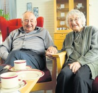

Lovise og Håkon sin slekt og familie
Lovise f. Eggan og Håkon Wahl
Personside 165
Niels Knudsen
M, #4101, f. før 1830, d. (?unknown)
| Pedigree Link |
Familie: Anne Haagensdatter Næsteneie (f. før 1830, d. 1859)
| Datter | Berthe-Marie Nielsdatter+ (f. 5 oktober 1848) |
Biografi
Niels Knudsen ble født før 1830. Han giftet seg med Anne Haagensdatter Næsteneie. Han døde (?unknown).
Niels Knudsen had reference number 12828.
| Sist redigert | 24 mars 2011 00:00:00 |
Anne Haagensdatter Næsteneie
K, #4102, f. før 1830, d. 1859
| Pedigree Link |
Familie: Niels Knudsen (f. før 1830, d. (?unknown))
| Datter | Berthe-Marie Nielsdatter+ (f. 5 oktober 1848) |
Biografi
Anne Haagensdatter Næsteneie ble født før 1830. Hun giftet seg med Niels Knudsen. Hun døde i 1859.
Anne Haagensdatter Næsteneie had reference number 12829.
| Sist redigert | 24 mars 2011 00:00:00 |
Nils Kristian Johansen Holtbråten
M, #4104, f. 4 september 1875, d. 4 mars 1951
Foreldre
| Far | Johan Andreassen Holtbråten (f. 15 februar 1846) |
| Mor | Berthe-Marie Nielsdatter (f. 5 oktober 1848) |
| Pedigree Link |
Familie: Julie Mariane Evensen (f. 16 juni 1881, d. 13 november 1967)
| Datter | Marit Onsrud+ (f. 2 oktober 1921, d. 24 mai 2011) |
Biografi
Nils Kristian Johansen Holtbråten ble født den 4 september 1875 på/i Holtbråten. Han giftet seg med Julie Mariane Evensen. Han døde den 4 mars 1951 på/i Oslo.
Nils Kristian Johansen Holtbråten had reference number 13052.
| Sist redigert | 24 mars 2011 00:00:00 |
Julie Mariane Evensen
K, #4105, f. 16 juni 1881, d. 13 november 1967
| Pedigree Link |
Familie: Nils Kristian Johansen Holtbråten (f. 4 september 1875, d. 4 mars 1951)
| Datter | Marit Onsrud+ (f. 2 oktober 1921, d. 24 mai 2011) |
Biografi
Julie Mariane Evensen ble født den 16 juni 1881. Hun giftet seg med Nils Kristian Johansen Holtbråten. Hun døde den 13 november 1967 på/i Oslo.
Julie Mariane Evensen was also known as Julie Mariane Holtbråten. Hun had reference number 13053.
| Sist redigert | 24 mars 2011 00:00:00 |
Anna Severine Eliasdatter Strøm
K, #4107, f. 28 mars 1858, d. 22 april 1948
Foreldre
| Far | Elias Jacobsen Strøm (f. 20 juli 1832) |
| Mor | Kassi Ingebrigtsdatter Ledsåk (f. 10 februar 1835) |
| Pedigree Link |
Familie: Johan Adolf Martinussen (f. 14 august 1859, d. 18 april 1901)
| Sønn | Edvard Marius Hamland+ (f. 9 september 1884, d. 5 november 1963) |
Biografi
Anna Severine Eliasdatter Strøm ble født u.e. den 28 mars 1858 på/i Straumen, Fosnes, Nord-Trøndelag. Hun giftet seg med Johan Adolf Martinussen den 6 mai 1884. Hun døde den 22 april 1948 på/i Hamland, Nærøy, Nord-Trøndelag.
Anna Severine Eliasdatter Strøm ble døpt den 4 juli 1858 på/i Fosnes kirke, Fosnes, Nord-Trøndelag.
| Sist redigert | 29 desember 2025 20:17:19 |
Johan Adolf Martinussen
M, #4108, f. 14 august 1859, d. 18 april 1901
Foreldre
| Far | Martinus Larsen (f. 1 juni 1822, d. 10 mai 1901) |
| Mor | Helene Karoline Johannesdatter (f. 1828, d. 17 august 1917) |
| Pedigree Link |
Familie: Anna Severine Eliasdatter Strøm (f. 28 mars 1858, d. 22 april 1948)
| Sønn | Edvard Marius Hamland+ (f. 9 september 1884, d. 5 november 1963) |
Biografi
Johan Adolf Martinussen ble født den 14 august 1859 på/i Storval, Nærøy, Nord-Trøndelag. Han giftet seg med Anna Severine Eliasdatter Strøm den 6 mai 1884. Han døde den 18 april 1901 på/i Hamland, Nærøy, Nord-Trøndelag.
| Sist redigert | 24 mars 2011 00:00:00 |
Carl Olsen
M, #4109, f. omtrent 1629
Foreldre
| Pedigree Link |
Familie:
| Sønn | Gjermund Carlsen Spillum |
Biografi
Carl Olsen ble født omtrent 1629 på/i Tengh, Østersund, Jämtland, Sverige.
Carl Olsen had reference number 143. Han er oppført i folketellingen for i 1645 på/i Tengh, Østersund, Jämtland, Sverige. Han bodde i 1664 på/i Spillum; Klinga, Namsos, Nord-Trøndelag. Han er oppført i folketellingen for i 1665 på/i Tengh, Østersund, Jämtland, Sverige. Overtok gården Spillum etter en Halvor Spillum. Antakelig ble han gift med hans datter eller enke. Sønnen Halvor fikk utstedt bykselsetel.
I koppskattmantallet for Jamtland meiner Mørkved å ha funne prov for at denne Carl Jamt var frå gården Teng - no skrevne Tang som ligg i sørhellinga ned mot Storsjøen mellom Krokom og Østersund. I dette skattemantallet står en Oluf - på norsk Ole Kjellson Tengh og kone Beret Carlsdtr, og dei hadde ein son Carl, som då altså var over 12 år. Dei som var yngre var fritekne for skatten.
Det er forresten fleire tilhøve her som ein ikkje er heilt viss på. Vi veit såleis ikkje namnet på kona til Carl, og heller ikkje namna på borna hans med unntak av Halvard og Gjermund som budde på gården Havik i Vemundvik. Dersom denne hypotesen er rett, er såleis Halvard oppkalla etter første mannen til mor si. Vi kan gå ut frå at Carl var gift 1964-1965. Han er ført opp i skattemantallet som brukar av gården i 1970. Han døydde truleg i 1690. Eldste sonen Halvard fekk utstedt bykselsetel på gården 25 sep 1690. Og frå no av er vi på fast grunn.
Stamfaren til de slekter Namdals-slekter omhandler, er Carl Spillum. Slektstradisjonen sier han var jamt, dvs fra Jemtland. Å tilveiebringe noe skriftlig bevis for dette lar seg ikke gjøre på grunn av manglende arkivmateriale både her hjemme og i Jemtland, men nærværende boks (Namdals-slekter) forfatter som har foretatt langvarige undersøkelser om dette spørsmål, tviler ikke på at vår slektstradisjon er riktig. Det kan kanskje høres litt rart ut at stamfaren til en av Namdalens største slekter skulle være svenske, utlending. Men han er i virkeligheten hverken svenske eller utlending. Jemtland var et norsk distrikt fra ca år 1100 til den ulykksalige Brømsebrofreden i 1645, da vi mistet både Jemtland og Herjedalen, hele 13 prestegjeld med
ca 1500 bønder (gårder). I disse 4-500 år var jemtene like norske som trøndere og namdalinger og stod i en livlig handelsforbindelse med disse sistnevnte ved handelsstevner (markeder) i Dufed, Østersund og Levanger. På tingene blev disse markeder bekjentgjort stengt i ufredstider, og igjen bekjentgjort åpne når freden var sluttet. Der flyter utvilsomt adskillig norsk blod i Jamtlands befolknings årer den dag i dag, og språket i Jemtland bærer også sine tydelige merker om norsk innslag. Selvsagt kom også en hel del jemter til å bosette seg i Trøndelagen, Namdalen og Helgeland utgjennom tidene, og av vårt arkivstoff fremgår det at dette innslag av jemter er ganske betydelig, særlig fra 1645 og utover.
Etpar ting som jeg mener styrker vår slektstradisjons riktighet, har jeg ved mine undersøkelser vært så heldig å finne. Det første er: I Kammerarkivet i Stockholm er oppbevartKophskattmantallet for Jemtland 1645. Det blev ved utskiftning overført fra vårt Riksarkiv til Stockholm i 1908, og er et viktig dokument for slektsgranskere. Det inneholder en fortegnelse over den siste svære og tunge ekstraskatt som den
dansk-norske konge Kristian den 4de fikk anledning til å pålegge Jemtlands befolkning. Skatten som var 8 sk pr hode over 12 år, blev oppebåret i august 1645 og utgjorde 627 rd, 2 ort fordelt på 7297 personer. 12 år senere, i 1957, tok fienden (de nordmennene) hele tienden i Jemtlands len og haver alt sin kos tagit av hela landet. I skattemantallet av 1645 finnes på side 5 en Oluf (Ole på norsk) Kjellsen Tengh og hustru Beret Carlsdtr samt deres eneste barn Carl Olsen som altså var over 12 år gammel. Ved å følge matriklene finner jeg at da Oluf Kjellsen forsvinner på Tengh, blir gården delt mellom sønnene Aron og Jacob Olufsønner i 1685 (muligens noen år før). Eldste sønnen Carl er altså forsvunnet, og denne Carl Olsen Tengh mener jeg er vår slekts stamfar, Carl Spillum. Gården Tengh ligger i en vakker sydhellende li på nordsiden av Storsjøen mellom Krokom og Østersund. Der er nu en jernbanestasjon av samme navn på gårdens grunn.
En annen ting som jeg mener bestyrker slekttradisjonens riktighet, fant jeg i Riksarkivet. I året 1680 bygslet Hemming Pedersen Jamt 2 øre 8 mkl i gården Høknes. Nu viser det seg at denne Hemming Jamt på Høknes som døde i 1704 og Carl Spillum må ha vært intime venner. De er faddere, formyndere og
vurderingsmenn for hverandre gjennom årene, og det er ikke usannsynlig at de kan ha vært slektninger, og at Carl Spillum har fått den yngre Hemming først til Spillum og senere hjulpet ham til den ledige tredjepart av Høknes. Hemming Høknes' hustru het Giøde (Gyda) Halvarsdtr, og hun er antakelig datter av Halvard Spillum hvis enke vår Carl Spillum formentlig blev gift med og således blev bruker av Halvards part på Spillum. Det er imidlertid ikke bvare om vår stamfars herkomst og slektsforhold vi er henvist til slutninger og formodninger. Også efter hans ankomst til Spillum er han en vanskelig herre å finne videre greie på. Ikke kjenner vi navnet på hans hustru, ikke på hans barn, undtatt hans eldste sønn Halvard som antakelig er oppkalt efter vår stamfars formann både i ekteskapet og på gården.
Enken efter Halvard beholdt bygselseddelen på gården, og av den grunn er det forståelig at der ikke finnes noen bygselseddel til vår stamfar. Vi kan anta at Carl Spillum blev gift med enken i 1964-65 selv om Halvard står opført i skattemanntallet i 1966 da vi har flere eksempler på at fogdene opførte gårdens brukere eller eiere flere år efter at disse notorisk er død.
Skatten var selvsagt hovedsaken for skatteoppkreverne, ikke navnene. Fra 1670 til 1690 er Carl opført i skattemantallene som bruker av gårdparten. Jeg ser da bort fra de almindelige forglemmelser enkelte år da inge bruker er oppført. Han må antakelig være død ca 1690. I hvert fall fikk hans eldste sønn Halvard den 25. sep 1690 bygselseddel utstedt av eieren Andreas Schiøller på gårdparten Spillum 1 øre 18 mkl. Muligens tok Carl kår av gården; men i hvert fall er han død før folketellingen 1701. Han antas å være født omkring 1630. Videre er det sannsynlig at Geirmund Carlsen Havig, 34 år ved folketellingen 1701, er en sønn av vår stamfar, altså en yngre bror av Halvard Carlsen som ved samme folketelling var 36 år og altså født 1665-66. Denne Geirmund Carlsen blir nemlig formynder for
Halvard Carlsens yngste sønn Ingebrigt Halvardsen Spillum ved skiftet etter Halvard 27/5 1722, og ved skiftet i Havigen 1732 og 1734 er både Carl Halvardsen og Ingebrigt Halvardsen Spillum vurderingsmenn og satt til formyndere, så slektskapet er utvilsomt. Gården er nå delt mellom sønnene Aron og Jacob, den eldste sønnen Carl er borte og truleg er det denne Carl Olsen som då er kommen til Spillum. Han bodde den 25 september 1690 på/i Spillum; Klinga, Namsos, Nord-Trøndelag.
I koppskattmantallet for Jamtland meiner Mørkved å ha funne prov for at denne Carl Jamt var frå gården Teng - no skrevne Tang som ligg i sørhellinga ned mot Storsjøen mellom Krokom og Østersund. I dette skattemantallet står en Oluf - på norsk Ole Kjellson Tengh og kone Beret Carlsdtr, og dei hadde ein son Carl, som då altså var over 12 år. Dei som var yngre var fritekne for skatten.
Det er forresten fleire tilhøve her som ein ikkje er heilt viss på. Vi veit såleis ikkje namnet på kona til Carl, og heller ikkje namna på borna hans med unntak av Halvard og Gjermund som budde på gården Havik i Vemundvik. Dersom denne hypotesen er rett, er såleis Halvard oppkalla etter første mannen til mor si. Vi kan gå ut frå at Carl var gift 1964-1965. Han er ført opp i skattemantallet som brukar av gården i 1970. Han døydde truleg i 1690. Eldste sonen Halvard fekk utstedt bykselsetel på gården 25 sep 1690. Og frå no av er vi på fast grunn.
Stamfaren til de slekter Namdals-slekter omhandler, er Carl Spillum. Slektstradisjonen sier han var jamt, dvs fra Jemtland. Å tilveiebringe noe skriftlig bevis for dette lar seg ikke gjøre på grunn av manglende arkivmateriale både her hjemme og i Jemtland, men nærværende boks (Namdals-slekter) forfatter som har foretatt langvarige undersøkelser om dette spørsmål, tviler ikke på at vår slektstradisjon er riktig. Det kan kanskje høres litt rart ut at stamfaren til en av Namdalens største slekter skulle være svenske, utlending. Men han er i virkeligheten hverken svenske eller utlending. Jemtland var et norsk distrikt fra ca år 1100 til den ulykksalige Brømsebrofreden i 1645, da vi mistet både Jemtland og Herjedalen, hele 13 prestegjeld med
ca 1500 bønder (gårder). I disse 4-500 år var jemtene like norske som trøndere og namdalinger og stod i en livlig handelsforbindelse med disse sistnevnte ved handelsstevner (markeder) i Dufed, Østersund og Levanger. På tingene blev disse markeder bekjentgjort stengt i ufredstider, og igjen bekjentgjort åpne når freden var sluttet. Der flyter utvilsomt adskillig norsk blod i Jamtlands befolknings årer den dag i dag, og språket i Jemtland bærer også sine tydelige merker om norsk innslag. Selvsagt kom også en hel del jemter til å bosette seg i Trøndelagen, Namdalen og Helgeland utgjennom tidene, og av vårt arkivstoff fremgår det at dette innslag av jemter er ganske betydelig, særlig fra 1645 og utover.
Etpar ting som jeg mener styrker vår slektstradisjons riktighet, har jeg ved mine undersøkelser vært så heldig å finne. Det første er: I Kammerarkivet i Stockholm er oppbevartKophskattmantallet for Jemtland 1645. Det blev ved utskiftning overført fra vårt Riksarkiv til Stockholm i 1908, og er et viktig dokument for slektsgranskere. Det inneholder en fortegnelse over den siste svære og tunge ekstraskatt som den
dansk-norske konge Kristian den 4de fikk anledning til å pålegge Jemtlands befolkning. Skatten som var 8 sk pr hode over 12 år, blev oppebåret i august 1645 og utgjorde 627 rd, 2 ort fordelt på 7297 personer. 12 år senere, i 1957, tok fienden (de nordmennene) hele tienden i Jemtlands len og haver alt sin kos tagit av hela landet. I skattemantallet av 1645 finnes på side 5 en Oluf (Ole på norsk) Kjellsen Tengh og hustru Beret Carlsdtr samt deres eneste barn Carl Olsen som altså var over 12 år gammel. Ved å følge matriklene finner jeg at da Oluf Kjellsen forsvinner på Tengh, blir gården delt mellom sønnene Aron og Jacob Olufsønner i 1685 (muligens noen år før). Eldste sønnen Carl er altså forsvunnet, og denne Carl Olsen Tengh mener jeg er vår slekts stamfar, Carl Spillum. Gården Tengh ligger i en vakker sydhellende li på nordsiden av Storsjøen mellom Krokom og Østersund. Der er nu en jernbanestasjon av samme navn på gårdens grunn.
En annen ting som jeg mener bestyrker slekttradisjonens riktighet, fant jeg i Riksarkivet. I året 1680 bygslet Hemming Pedersen Jamt 2 øre 8 mkl i gården Høknes. Nu viser det seg at denne Hemming Jamt på Høknes som døde i 1704 og Carl Spillum må ha vært intime venner. De er faddere, formyndere og
vurderingsmenn for hverandre gjennom årene, og det er ikke usannsynlig at de kan ha vært slektninger, og at Carl Spillum har fått den yngre Hemming først til Spillum og senere hjulpet ham til den ledige tredjepart av Høknes. Hemming Høknes' hustru het Giøde (Gyda) Halvarsdtr, og hun er antakelig datter av Halvard Spillum hvis enke vår Carl Spillum formentlig blev gift med og således blev bruker av Halvards part på Spillum. Det er imidlertid ikke bvare om vår stamfars herkomst og slektsforhold vi er henvist til slutninger og formodninger. Også efter hans ankomst til Spillum er han en vanskelig herre å finne videre greie på. Ikke kjenner vi navnet på hans hustru, ikke på hans barn, undtatt hans eldste sønn Halvard som antakelig er oppkalt efter vår stamfars formann både i ekteskapet og på gården.
Enken efter Halvard beholdt bygselseddelen på gården, og av den grunn er det forståelig at der ikke finnes noen bygselseddel til vår stamfar. Vi kan anta at Carl Spillum blev gift med enken i 1964-65 selv om Halvard står opført i skattemanntallet i 1966 da vi har flere eksempler på at fogdene opførte gårdens brukere eller eiere flere år efter at disse notorisk er død.
Skatten var selvsagt hovedsaken for skatteoppkreverne, ikke navnene. Fra 1670 til 1690 er Carl opført i skattemantallene som bruker av gårdparten. Jeg ser da bort fra de almindelige forglemmelser enkelte år da inge bruker er oppført. Han må antakelig være død ca 1690. I hvert fall fikk hans eldste sønn Halvard den 25. sep 1690 bygselseddel utstedt av eieren Andreas Schiøller på gårdparten Spillum 1 øre 18 mkl. Muligens tok Carl kår av gården; men i hvert fall er han død før folketellingen 1701. Han antas å være født omkring 1630. Videre er det sannsynlig at Geirmund Carlsen Havig, 34 år ved folketellingen 1701, er en sønn av vår stamfar, altså en yngre bror av Halvard Carlsen som ved samme folketelling var 36 år og altså født 1665-66. Denne Geirmund Carlsen blir nemlig formynder for
Halvard Carlsens yngste sønn Ingebrigt Halvardsen Spillum ved skiftet etter Halvard 27/5 1722, og ved skiftet i Havigen 1732 og 1734 er både Carl Halvardsen og Ingebrigt Halvardsen Spillum vurderingsmenn og satt til formyndere, så slektskapet er utvilsomt. Gården er nå delt mellom sønnene Aron og Jacob, den eldste sønnen Carl er borte og truleg er det denne Carl Olsen som då er kommen til Spillum. Han bodde den 25 september 1690 på/i Spillum; Klinga, Namsos, Nord-Trøndelag.
| Sist redigert | 26 juli 2022 00:32:52 |
Edvard Marius Hamland
M, #4110, f. 9 september 1884, d. 5 november 1963
Foreldre
| Far | Johan Adolf Martinussen (f. 14 august 1859, d. 18 april 1901) |
| Mor | Anna Severine Eliasdatter Strøm (f. 28 mars 1858, d. 22 april 1948) |
| Pedigree Link |
Familie: Ingara Otilie Hamland (f. 21 oktober 1887, d. 11 januar 1955)
| Datter | Gunvor Annie Hamland+ (f. 19 mars 1910, d. 22 mars 1998) |
| Datter | Ester Inanda Hamland+ (f. 20 september 1915, d. 7 mai 2011) |
| Datter | Sigrun Kathinka Hamland+ (f. 27 november 1928) |
Biografi
Edvard Marius Hamland ble født den 9 september 1884 på/i Nærøy, Nord-Trøndelag. Han giftet seg med Ingara Otilie Hamland i 1909. Han døde den 5 november 1963 på/i Hamland, Nærøy, Nord-Trøndelag.
| Sist redigert | 24 mars 2011 00:00:00 |
John Olsen Weium
M, #4112, f. 1749, d. 1835
Foreldre
| Far | Ole Arntsen Weium (f. 1713, d. 1800) |
| Mor | Karen Joensdatter Ekker (f. 1716, d. 1807) |
| Pedigree Link |
Familie: Gjertrud Christensdatter Engstad (f. 1748, d. 23 juni 1835)
| Datter | Gisken Johnsdatter Weium+ (f. 1793, d. 28 mai 1860) |
Biografi
John Olsen Weium ble født i 1749 på/i Veiem, Grong, Nord-Trøndelag. Han giftet seg med Gjertrud Christensdatter Engstad. Han døde i 1835 på/i Veiem, Grong, Nord-Trøndelag.
John Olsen Weium had reference number 14640. Han bodde den 1 juli 1813 på/i Weium, Grong, Nord-Trøndelag.
| Sist redigert | 22 september 2016 00:00:00 |
Ole Arntsen Weium
M, #4113, f. 1713, d. 1800
| Pedigree Link |
Familie: Karen Joensdatter Ekker (f. 1716, d. 1807)
| Sønn | John Olsen Weium+ (f. 1749, d. 1835) |
Biografi
Ole Arntsen Weium ble født i 1713. Han giftet seg med Karen Joensdatter Ekker. Han døde i 1800 på/i Veiem, Grong, Nord-Trøndelag.
Ole Arntsen Weium had reference number 14641. Han kjøpte i 1768 Veium 1/1, Grong, Nord-Trøndelag.
| Sist redigert | 9 april 2013 00:00:00 |
John Jørgensen Strand
M, #4114, f. 1809, d. 11 desember 1861
Foreldre
| Far | Jørgen Darre Pedersen Strand (f. 18 oktober 1779, d. 18 mars 1849) |
| Mor | Gisken Johnsdatter Weium (f. 1793, d. 28 mai 1860) |
| Pedigree Link |
Familie: Beret Kjerstina Johannesdatter Ekker (f. 15 oktober 1811, d. 15 juli 1849)
| Sønn | Jørgen Thomas Jonsen Strand+ (f. 28 februar 1836, d. 11 februar 1899) |
| Sønn | Johannes Johnsen Strand+ (f. 20 mai 1838, d. 2 januar 1936) |
| Sønn | Georg Brede Johnsen Strand (f. 19 mars 1840, d. 1924) |
| Datter | Gidsken Johnsdatter Strand+ (f. 1842, d. 4 desember 1933) |
| Sønn | Ole Edvard Johnsen Strand+ (f. 1 juli 1844, d. 26 august 1934) |
| Sønn | Bernt Carsten Johnsen Strand (f. 1846, d. 1852) |
Biografi
John Jørgensen Strand ble født i 1809 på/i Weium, Grong, Nord-Trøndelag. Han giftet seg med Beret Kjerstina Johannesdatter Ekker i 1835. Han giftet seg med Sara Johnsdatter Solberg den 24 november 1852. Han døde den 11 desember 1861 på/i Weium, Grong, Nord-Trøndelag.
John Jørgensen Strand had reference number 14643. Han kjøpte i 1835 Veium 1/1, Grong, Nord-Trøndelag.
Han bodde i 1852 på/i Veiumnesset, Snåsa, Nord-Trøndelag. Han bodde i 1861 på/i Weium, Grong, Nord-Trøndelag.
John og Beret overtok hans slektsgård for 1200 spdl
Jørgen overtok gården etter farens død
Johns økonomiske stilling var ikke god, så han solgte halvdelen
av gården til sin yngre bror Ole, Veiumnesset ble den nye
gården kalt.
| Sist redigert | 1 februar 2013 00:00:00 |
| Slektskap | 4-menning 5 ganger forskjøvet til Håkon Wahl |
Beret Kjerstina Johannesdatter Ekker
K, #4115, f. 15 oktober 1811, d. 15 juli 1849
Foreldre
| Far | Johannes Ekker (f. 1779, d. 27 mai 1871) |
| Mor | Bereth Olsdatter Mælen (f. 1783, d. 21 februar 1852) |
| Pedigree Link |
Familie: John Jørgensen Strand (f. 1809, d. 11 desember 1861)
| Sønn | Jørgen Thomas Jonsen Strand+ (f. 28 februar 1836, d. 11 februar 1899) |
| Sønn | Johannes Johnsen Strand+ (f. 20 mai 1838, d. 2 januar 1936) |
| Sønn | Georg Brede Johnsen Strand (f. 19 mars 1840, d. 1924) |
| Datter | Gidsken Johnsdatter Strand+ (f. 1842, d. 4 desember 1933) |
| Sønn | Ole Edvard Johnsen Strand+ (f. 1 juli 1844, d. 26 august 1934) |
| Sønn | Bernt Carsten Johnsen Strand (f. 1846, d. 1852) |
Biografi
Beret Kjerstina Johannesdatter Ekker ble født den 15 oktober 1811. Hun giftet seg med John Jørgensen Strand i 1835. Hun døde den 15 juli 1849 på/i Weium, Grong, Nord-Trøndelag.
Beret Kjerstina Johannesdatter Ekker had reference number 14644.
| Sist redigert | 12 desember 2012 00:00:00 |
Johannes Johnsen Strand
M, #4116, f. 20 mai 1838, d. 2 januar 1936
Foreldre
| Far | John Jørgensen Strand (f. 1809, d. 11 desember 1861) |
| Mor | Beret Kjerstina Johannesdatter Ekker (f. 15 oktober 1811, d. 15 juli 1849) |
| Pedigree Link |
Familie: Sanna Eliasdatter Blengslien (f. 1844, d. 1903)
| Datter | Beret Kjerstina Johannesdatter Strand+ (f. 11 mars 1871, d. 11 september 1954) |
| Sønn | John Elias Johannessen Strand (f. 27 april 1872, d. 16 februar 1943) |
| Sønn | Severin Johannessen Strand (f. 1875, d. 8 oktober 1926) |
| Sønn | Salamon Johannessen Strand+ (f. 14 september 1877, d. 5 desember 1920) |
| Datter | Sofie Johannesdatter Strand (f. 3 mars 1879, d. 4 april 1950) |
| Datter | Gidsken Johanna Johannesdatter Strand+ (f. 23 juni 1880, d. 18 juli 1968) |
| Datter | Julie Johannesdatter Strand (f. 20 desember 1881, d. 19 oktober 1969) |
Biografi
Johannes Johnsen Strand ble født den 20 mai 1838 på/i Weium, Grong, Nord-Trøndelag. Han giftet seg med Sanna Eliasdatter Blengslien i 1870. Han døde den 2 januar 1936 på/i Overhalla, Nord-Trøndelag. Han ble gravlagt den 18 januar 1936 på/i Skage kirkegård, Overhalla, Nord-Trøndelag.
Johannes Johnsen Strand had reference number 14670. Han bodde på/i Hammer, Skage, Overhalla, Nord-Trøndelag. Han i 1935 innstilte laksefisket sitt på Veium Hammer, Skage, Overhalla, Nord-Trøndelag.
| Sist redigert | 27 april 2023 00:10:34 |
| Slektskap | 5-menning 4 ganger forskjøvet til Håkon Wahl |
Sanna Eliasdatter Blengslien
K, #4117, f. 1844, d. 1903
| Pedigree Link |
Familie: Johannes Johnsen Strand (f. 20 mai 1838, d. 2 januar 1936)
| Datter | Beret Kjerstina Johannesdatter Strand+ (f. 11 mars 1871, d. 11 september 1954) |
| Sønn | John Elias Johannessen Strand (f. 27 april 1872, d. 16 februar 1943) |
| Sønn | Severin Johannessen Strand (f. 1875, d. 8 oktober 1926) |
| Sønn | Salamon Johannessen Strand+ (f. 14 september 1877, d. 5 desember 1920) |
| Datter | Sofie Johannesdatter Strand (f. 3 mars 1879, d. 4 april 1950) |
| Datter | Gidsken Johanna Johannesdatter Strand+ (f. 23 juni 1880, d. 18 juli 1968) |
| Datter | Julie Johannesdatter Strand (f. 20 desember 1881, d. 19 oktober 1969) |
Biografi
Sanna Eliasdatter Blengslien ble født i 1844 på/i Hammer, Overhalla, Nord-Trøndelag. Hun giftet seg med Johannes Johnsen Strand i 1870. Hun døde i 1903 på/i Hammer, Skage, Overhalla, Nord-Trøndelag.
Sanna Eliasdatter Blengslien had reference number 14671.
| Sist redigert | 1 februar 2013 00:00:00 |
Beret Kjerstina Johannesdatter Strand
K, #4118, f. 11 mars 1871, d. 11 september 1954
Foreldre
| Far | Johannes Johnsen Strand (f. 20 mai 1838, d. 2 januar 1936) |
| Mor | Sanna Eliasdatter Blengslien (f. 1844, d. 1903) |
| Pedigree Link |
Familie: Jacob Rønning (f. 22 juli 1873, d. 28 april 1938)
| Sønn | Joar Kornelius Rønning+ (f. 24 juli 1901, d. 10 april 1970) |
| Sønn | Johannes Sigvard Jakobsen Rønning+ (f. 31 oktober 1902, d. 14 juni 1967) |
Biografi
Beret Kjerstina Johannesdatter Strand ble født den 11 mars 1871 på/i Hammer, Skage, Overhalla, Nord-Trøndelag. Hun giftet seg med Jacob Rønning den 5 november 1899. Hun døde den 11 september 1954. Hun ble gravlagt den 20 september 1954 på/i Skage kirkegård, Overhalla, Nord-Trøndelag.
Beret Kjerstina Johannesdatter Strand had reference number 14674.
| Sist redigert | 30 mars 2014 00:00:00 |
| Slektskap | 6-menning 3 ganger forskjøvet til Håkon Wahl |
Jacob Rønning
M, #4119, f. 22 juli 1873, d. 28 april 1938
Foreldre
| Far | John Olsen Rønningen (f. før 1853) |
| Mor | Karen Jacobsdatter |
| Pedigree Link |
Familie: Beret Kjerstina Johannesdatter Strand (f. 11 mars 1871, d. 11 september 1954)
| Sønn | Joar Kornelius Rønning+ (f. 24 juli 1901, d. 10 april 1970) |
| Sønn | Johannes Sigvard Jakobsen Rønning+ (f. 31 oktober 1902, d. 14 juni 1967) |
Biografi
Jacob Rønning ble født den 22 juli 1873 på/i Overhalla, Nord-Trøndelag. Han giftet seg med Beret Kjerstina Johannesdatter Strand den 5 november 1899. Han døde den 28 april 1938. Han ble gravlagt den 7 mai 1938 på/i Skage kirkegård, Overhalla, Nord-Trøndelag.
Jacob Rønning had reference number 14675. Han eide i 1910 Løvli 13/5, Hunn, Overhalla, Nord-Trøndelag.
| Sist redigert | 30 mars 2014 00:00:00 |
Johannes Sigvard Jakobsen Rønning
M, #4120, f. 31 oktober 1902, d. 14 juni 1967
Foreldre
| Far | Jacob Rønning (f. 22 juli 1873, d. 28 april 1938) |
| Mor | Beret Kjerstina Johannesdatter Strand (f. 11 mars 1871, d. 11 september 1954) |
| Pedigree Link |
Familie: Olga Elise Eliasdatter Gansmo (f. 2 februar 1902, d. 5 august 1983)
| Datter | Kirsten Lovise Johannesdatter Rønning+ (f. 13 juli 1930, d. 25 mars 2021) |
| Datter | Eva Johanne Rønning (f. 2 oktober 1931) |
| Sønn | John Severin Rønning (f. 24 august 1934, d. 23 november 2023) |
| Datter | Åse Rønning (f. 30 mars 1946, d. 16 april 2008) |
Biografi
Johannes Sigvard Jakobsen Rønning ble født den 31 oktober 1902 på/i Løvli, Overhalla, Nord-Trøndelag. Han giftet seg med Olga Elise Eliasdatter Gansmo den 5 oktober 1929. Han døde den 14 juni 1967. Han ble gravlagt den 21 juni 1967 på/i Skage kirkegård, Overhalla, Trøndelag.
Johannes og Olga kjøpte småbruket etter avdøde Severin. Johannes Sigvard Jakobsen Rønning had reference number 14678. Han kjøpte i 1927 Heimstad 14/8, Belgvold, Overhalla, Nord-Trøndelag.
| Sist redigert | 8 januar 2023 23:39:21 |
| Slektskap | 7-menning 2 ganger forskjøvet til Håkon Wahl |
Olga Elise Eliasdatter Gansmo
K, #4121, f. 2 februar 1902, d. 5 august 1983
Foreldre
| Far | Elias Gansmo (f. 11 oktober 1872, d. 4 januar 1938) |
| Mor | Oline Petrine Olsdatter Skotnes (f. 26 mai 1875, d. 28 januar 1953) |
| Pedigree Link |
Familie: Johannes Sigvard Jakobsen Rønning (f. 31 oktober 1902, d. 14 juni 1967)
| Datter | Kirsten Lovise Johannesdatter Rønning+ (f. 13 juli 1930, d. 25 mars 2021) |
| Datter | Eva Johanne Rønning (f. 2 oktober 1931) |
| Sønn | John Severin Rønning (f. 24 august 1934, d. 23 november 2023) |
| Datter | Åse Rønning (f. 30 mars 1946, d. 16 april 2008) |
Biografi
Olga Elise Eliasdatter Gansmo ble født den 2 februar 1902 på/i Overhalla, Nord-Trøndelag. Hun giftet seg med Johannes Sigvard Jakobsen Rønning den 5 oktober 1929. Hun døde den 5 august 1983. Hun ble gravlagt den 11 august 1983 på/i Skage kirkegård, Overhalla, Trøndelag.
Olga Elise Eliasdatter Gansmo had reference number 14679.
| Sist redigert | 8 januar 2023 23:40:22 |
Kirsten Lovise Johannesdatter Rønning
K, #4122, f. 13 juli 1930, d. 25 mars 2021
Foreldre
| Far | Johannes Sigvard Jakobsen Rønning (f. 31 oktober 1902, d. 14 juni 1967) |
| Mor | Olga Elise Eliasdatter Gansmo (f. 2 februar 1902, d. 5 august 1983) |
| Pedigree Link |
Familie: Odd Bach (f. 22 mai 1930, d. 23 august 2017)
| Datter | Olaug Bach+ (f. 10 juli 1957) |
| Datter | Reidun Bach (f. 17 desember 1958) |
| Sønn | Steinar Bach+ (f. 15 oktober 1960, d. 5 november 2020) |
| Sønn | Håkon Bach (f. 29 januar 1962) |
| Datter | Ingrid Bach (f. 10 februar 1964) |
| Sønn | Torstein Bach (f. 28 juni 1966) |
| Datter | Astrid Bach (f. 25 oktober 1969) |
{kind=link}

Odd og Kirsten Bach - diamantbrudepar
Biografi
Kirsten Lovise Johannesdatter Rønning ble født den 13 juli 1930 på/i Heimstad 14/8, Belgvold, Overhalla, Nord-Trøndelag. Hun giftet seg med Odd Bach den 7 juli 1956. Hun døde den 25 mars 2021 på/i Nærøy bo- og behandlingssenter, Kolvereid, Nærøy, Trøndelag. Hun ble gravlagt den 8 april 2021 på/i Foldereid kirkegård, Nærøysund, Trøndelag.
Hun døde den 25 mars 2021 på/i Nærøy bo- og behandlingssenter, Kolvereid, Nærøy, Trøndelag. Hun ble gravlagt den 8 april 2021 på/i Foldereid kirkegård, Nærøysund, Trøndelag.
Hun døde den 25 mars 2021 på/i Nærøy bo- og behandlingssenter, Kolvereid, Nærøy, Trøndelag. Hun ble gravlagt den 8 april 2021 på/i Foldereid kirkegård, Nærøysund, Trøndelag. Kirsten Lovise Johannesdatter Rønning was also known as Kirsten Lovise Bach. Hun had reference number 14682. Hun bodde på/i Foldereid, Nærøy, Nord-Trøndelag.
| Sist redigert | 17 august 2024 21:46:03 |
| Slektskap | 8-menning 1 gang forskjøvet til Håkon Wahl |
John Olsen Rønningen
M, #4123, f. før 1853
| Pedigree Link |
Familie: Karen Jacobsdatter
| Sønn | Jacob Rønning+ (f. 22 juli 1873, d. 28 april 1938) |
Biografi
John Olsen Rønningen ble født før 1853. Han giftet seg med Karen Jacobsdatter.
John Olsen Rønningen had reference number 14685. Han bodde på/i Rønningen, Fosnes, Nord-Trøndelag.
| Sist redigert | 7 november 2011 00:00:00 |
Karen Jacobsdatter
K, #4124
| Pedigree Link |
Familie: John Olsen Rønningen (f. før 1853)
| Sønn | Jacob Rønning+ (f. 22 juli 1873, d. 28 april 1938) |
Biografi
Karen Jacobsdatter giftet seg med John Olsen Rønningen.
Karen Jacobsdatter was also known as Karen Rønningen. Hun had reference number 14686.
| Sist redigert | 7 november 2011 00:00:00 |
Johannes Ekker
M, #4125, f. 1779, d. 27 mai 1871
Foreldre
| Far | Ingebrigt Pedersen Øie (f. 1760, d. 1815) |
| Mor | Maria Olsdatter (f. 1744, d. 1829) |
| Pedigree Link |
Familie: Bereth Olsdatter Mælen (f. 1783, d. 21 februar 1852)
| Sønn | Iver Johannessen Ekker+ (f. 1809, d. 1884) |
| Datter | Beret Kjerstina Johannesdatter Ekker+ (f. 15 oktober 1811, d. 15 juli 1849) |
| Datter | Margrethe Johannesdatter Ekker+ (f. 1815, d. 1883) |
| Sønn | William Brede Skilleås Johannessen Ekker+ (f. 8 oktober 1821, d. 5 mai 1894) |
Biografi
Johannes Ekker ble født i 1779 på/i Skage, Overhalla, Nord-Trøndelag. Han giftet seg med Bereth Olsdatter Mælen den 10 juli 1805 på/i Grong, Nord-Trøndelag. Han døde den 27 mai 1871 på/i Grong, Nord-Trøndelag.
Johannes Ekker had reference number 14956. Han bodde på/i Ekker, Grong, Nord-Trøndelag.
| Sist redigert | 16 januar 2022 00:00:00 |